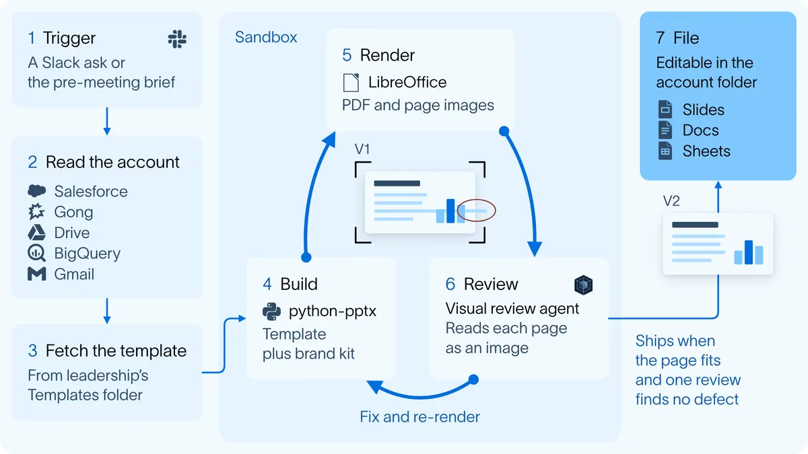
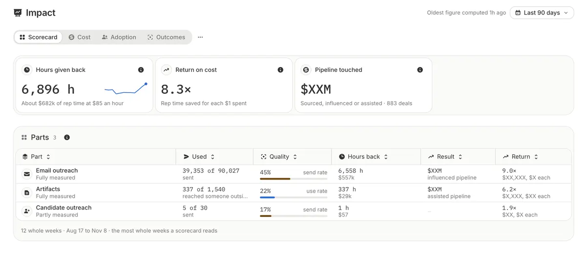

銷售文件工廠：上下文比模型更決定品質
導讀原文：LangChain 說明自家 GTM Agent 如何標準化銷售文件——廠商自家案例（LangChain 部落格）
一份銷售文件的好壞，多半不是 prompt 調出來的，而是你把公司怎麼跑交易寫進了 agent 的上下文。
這套 GTM Agent 原本就在 Slack 裡跑：開發潛在客戶、擬個人化開發信給業務員核准、每週推播帳戶訊號。
業務員每天在用，於是它順勢接下最耗時的一段：做銷售文件。
痛點不是模型不夠強，而是同一份文件在組織裡有多個版本，每筆交易重做一次，樣子每次不同。
團隊同時要三件事：客戶看到的東西維持高標準、停掉每個人重複的手工、每筆交易走同一套流程。
第三件最難。每個階段都有 gate，例如指名經濟買家、談定成功標準；純手工時，漏掉的步驟常要等到 pipeline 檢視會才浮現。
文件改由 agent 歸檔後，缺件在交易還活著的時候就會被抓到。
（編輯觀點：把流程稽核從事後補救移到當下，比文件變漂亮更有價值。）
| 餵給 agent 的上下文 | 內容 | 原文說的作用 |
|---|---|---|
| 流程知識 | 需要哪些文件、何時需要、什麼叫做好 | 給 agent 一副骨架 |
| 客戶上下文 | Salesforce 紀錄、產品使用量、通話逐字稿、風險、決策標準、下一步 | 業務員不必自己撈資料，能同時扛更多交易 |
| 語氣與品牌 | 品牌素材與 style guide | 產出看起來一致、有整理過 |
原文的重點句：大部分心力花在給上下文，很少花在補模型的 prompt。
文件也不是單一格式：客製帳戶計畫、價值驗證（proof-of-value）文件、提案簡報、上手計畫，對應銷售循環五個階段，每階段各有自己的標準文件。
七步生成，一條停損規則

一次生成有兩條觸發路徑：業務員在 Slack 開口，或 agent 在會議準備時主動提議要哪一份。
七步裡真正的核心是流程圖上的第 4 到 6 步（Build／Render／Review）：在 sandbox 用 python-pptx 套版、LibreOffice 轉 PDF、逐頁轉圖，再由 agent 自己看圖找版面毛病。
品牌規則以「brand as code」烤進 sandbox 映像檔：logo、色票、字體、style guide 都在裡面，改動要走審核過的 PR。
自我複審會拉高品質，也會拉高延遲：早期版本會對已經沒問題的頁面反覆複審，有時幾十次。
停損規則很簡單——一輪複審找不到真實缺陷就出貨，單頁文件因此從 18 分鐘降到 7 分鐘。
成品回到帳戶的 Google Drive：業務員補筆記、改 agent 做過的地方，agent 下一份文件前會全部讀過。
| 原語 | 在系統裡做什麼 | 原文怎麼說 |
|---|---|---|
| skills 與 instructions | 存放銷售流程、範本與階段規則 | 與程式碼分開版控 |
| sandbox | 裝好 Office 工具，可產檔、轉圖、看結果再修 | 品牌套件直接烤進映像檔 |
| Slack 介面 | 業務員下指令與收成品的地方 | 業務員原本就在這裡求助 |
| 排程執行 | 定時跑，不必等人開口 | 支撐會前簡報，讓 agent 主動 |
| memory | 記住整筆交易的脈絡 | 不只涵蓋單一對話 |
| LangSmith tracing | 看到每次 render、工具呼叫與複審 | 用來診斷自我複審造成的延遲 |
原文直言，任何團隊做類似的 agent，這六項一個都不能少；託管版 Managed Deep Agents 直接提供 sandbox、skills、memory 與排程。
主動推送，再用四個指標驗收
業務員不會主動要一份自己不知道存在的文件，所以 agent 改成主動：讀行事曆，在會議前送簡報。
若這場會議所屬階段還缺文件，它會直接講該帶哪一份；主管也能對交易派任務。

用量靠一個 artifact hub 介面兜住：每筆交易在哪個階段、有哪些文件、下一份該做什麼。
成效用四個指標看：產量、利用率（有多少寄到公司外）、槓桿（省下工時對比執行成本）、結果（碰到多少 pipeline）。
四項互相牽制：只看產量，agent 可以很忙卻幾乎沒人用。
目前數字：有寄出文件的交易 47% 推進到下一階段，配對的對照組只有 16%（LangChain 自報，無第三方驗證）。
（編輯觀點：47% 對 16% 是配對比較，不是隨機試驗；願意寄出文件本身就可能代表交易比較健康。）
品質判斷仍靠人：每份文件有 owner，加上每週主管會議、全業務部門的 office hours 與 Slack 頻道三路回饋。
與 owner 逐項討論的長逐字稿，會直接交給 coding agent 去開規格。
帶走三件事
品質來自上下文，不是 prompt 微調。流程、範本、品牌要先變成可版控的資產。
自我複審要有停損。一輪找不到缺陷就出貨，否則延遲會吃掉品質收益。
產量不等於成效。1,540 份只有 337 份寄出，利用率才是真訊號。
導讀為本站編輯內容（AI 摘解自原文與館藏重點，非官方文件）；成效數字與比率皆為 LangChain 自報，無第三方驗證。原文圖為合理引用、自託管存放，未經改作。內容經對照原文的獨立事實審查後發布。